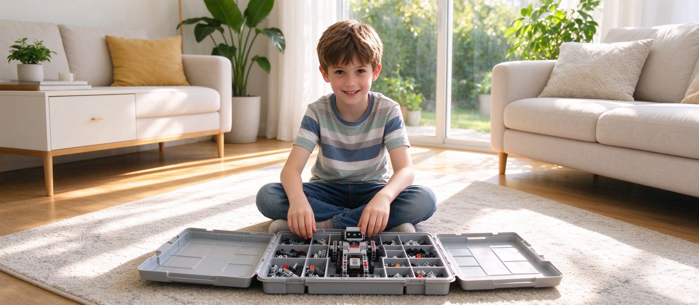

要不要给孩子买一套机器人器材？先看这三种情况
多数家庭不需要自己买器材：课上全套由校区提供，孩子的练习也不必依赖硬件。真正值得买的只有三种情况——长期在家做项目、明确备赛、孩子已经能独立设计。买之前先算清三件事：兼容性、零件补充和后续赛事是否还要换器材。

结论先行：多数家庭不需要自己买机器人器材。上课的器材由校区提供，课后的练习也不必依赖硬件——讲一遍传动路径、纸上画判断顺序、找出家长故意说错的地方，这三件事不需要任何零件。真正值得买的只有三种情况：孩子长期在家做项目、明确要备赛、已经能独立设计作品。买之前先算清三件事：兼容性、零件补充、后续赛事会不会还要换器材。
一、先弄清：课上到底用不用自带
机器人课的器材通常分两类：一类是教学套件（结构件、电机、传感器、主控板成套），一类是竞赛器材。正规机构的上课器材由校区提供，原因是同班孩子必须用同一套系统，否则老师无法统一讲结构和程序；器材损耗也由机构承担。
所以第一个判断很简单：如果孩子只是正常上课，不需要买。需要自己买的信号是「回家也想继续做」，而不是「上课要用」。
二、值得买的三种情况
- 长期在家做项目：孩子每周都主动想做一个新东西，且能独立完成，家里有一套可以随时开工的器材会明显提高产出。这时候买的是「时间效率」，不是「学习资格」。
- 明确备赛：赛前需要反复调试，校区的开放时间有限，家里有一套同体系器材可以把调试拉长。注意：必须与参赛器材同系列，否则练了也用不上。
- 孩子已经能独立设计：能自己想方案、自己排错，器材就不再是教学工具，而是创作工具。这个阶段买，性价比最高。
三、不值得买的三种情况
- 孩子还在跟着老师做：买回家也不会自己开工，最后变成柜子里的摆设。
- 为了「不输在起跑线」：器材不解决方法和陪伴，一套几千元的套件替代不了一节好课。
- 孩子刚上几节课：还没确定是否长期学，先观察三个月再决定。
四、买之前必须算清的三件事
① 兼容性：器材是否与校区教学体系同系列。不同品牌的零件、接口、编程环境互不通用，买错等于白买。
② 零件补充：结构件会损耗、会丢，尤其是小零件。买之前问清单件补充渠道和价格，别只看套装价。
③ 后续赛事：如果目标是白名单赛事，先确认这套器材能不能用于目标赛项。赛事规则每届可能调整，今年能用的器材明年不一定还能用——这一点比套装价格重要得多。
补充一句实话：我们这边学员参赛用的中鸣器材由学校提供，同一套器材可以沿用于全年多场教育部白名单赛事，家长不需要每年重新购置机器人硬件，只需按当届要求更换竞赛场地道具，道具价格不高。这也是很多家庭选择不在家另买一套的原因。
五、如果决定买，怎么用才不浪费
三条建议：
- 固定一个「项目角」：器材有固定位置、有收纳格，孩子随时能开工，不用每次翻箱倒柜。
- 每周一个小目标：不追求大作品，一周做成一个功能（会避障、会沿线走、会抓取），做完录一段视频。
- 允许拆坏：家里的器材就是用来试错的，装不回去也是学习的一部分。别因为怕弄坏而不许动。
六、什么情况下买了反而有害
两种：孩子把器材当成玩具而不是工具，只拼造型不调试——这时候需要的是任务，不是更多零件；家长把「买了器材」当成「已经投入」，从此不再关注孩子的学习过程——器材替代不了陪伴和反馈，反而容易让家长误判进度。
七、到校可以先问什么
来试听时可以直接问三个问题：上课器材是否全部由校区提供？如果孩子想在家练，推荐哪一类？参赛器材是自购还是学校提供？我们这边三年级以下 60 分钟、三年级以上 120 分钟，2–4 人小班，一周一次，上课器材由校区提供，竞赛方向的中鸣器材同样由学校提供。地址：河西区大沽南路 459 号下瓦房晶采大厦写字楼四楼 408 室。
预约体验课